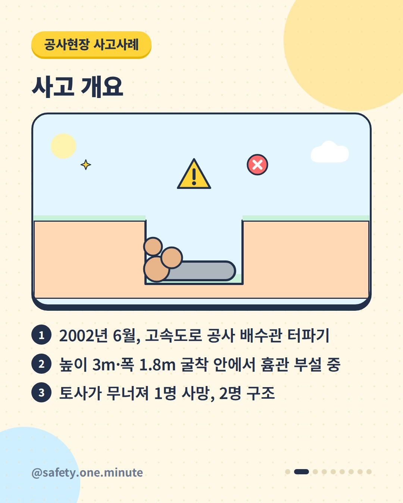
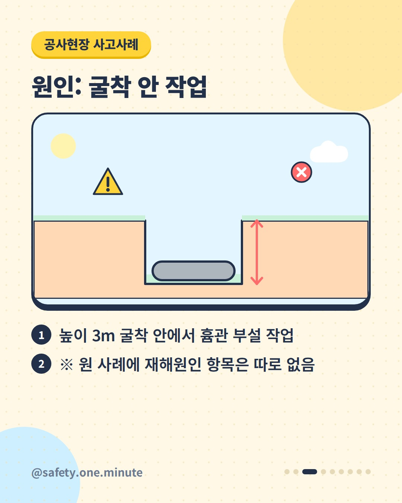
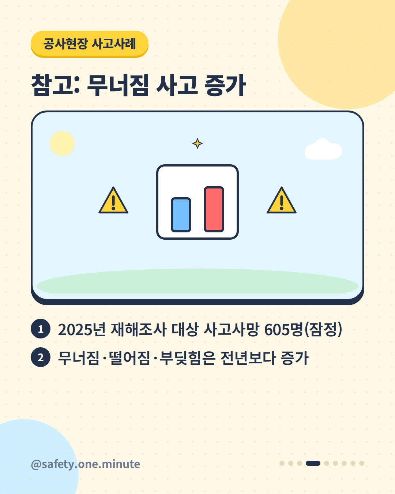
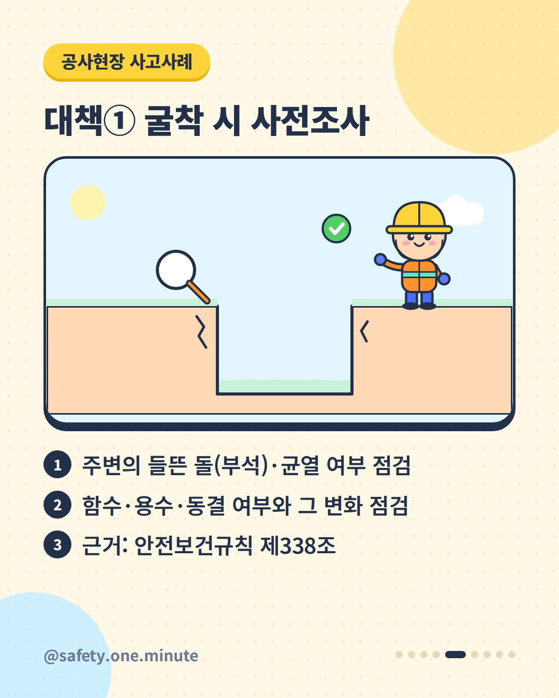
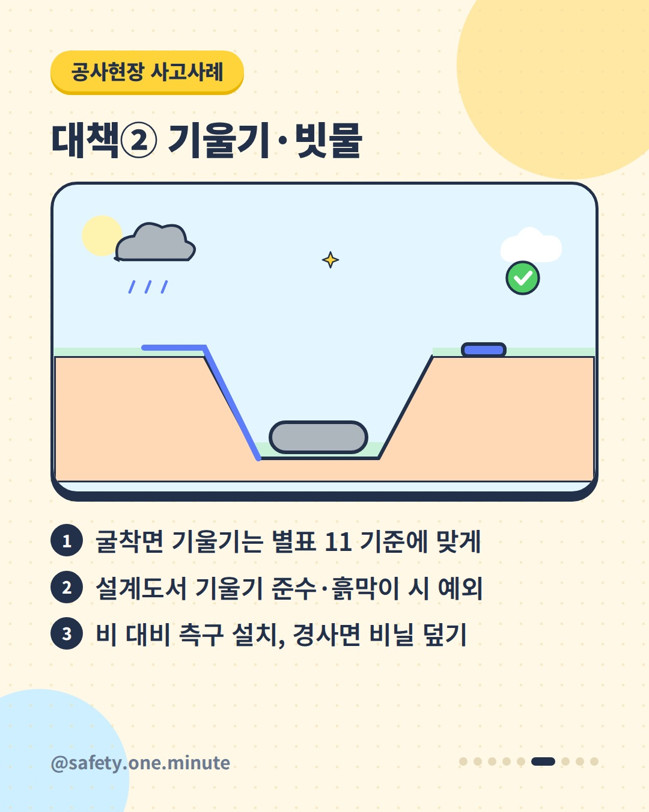
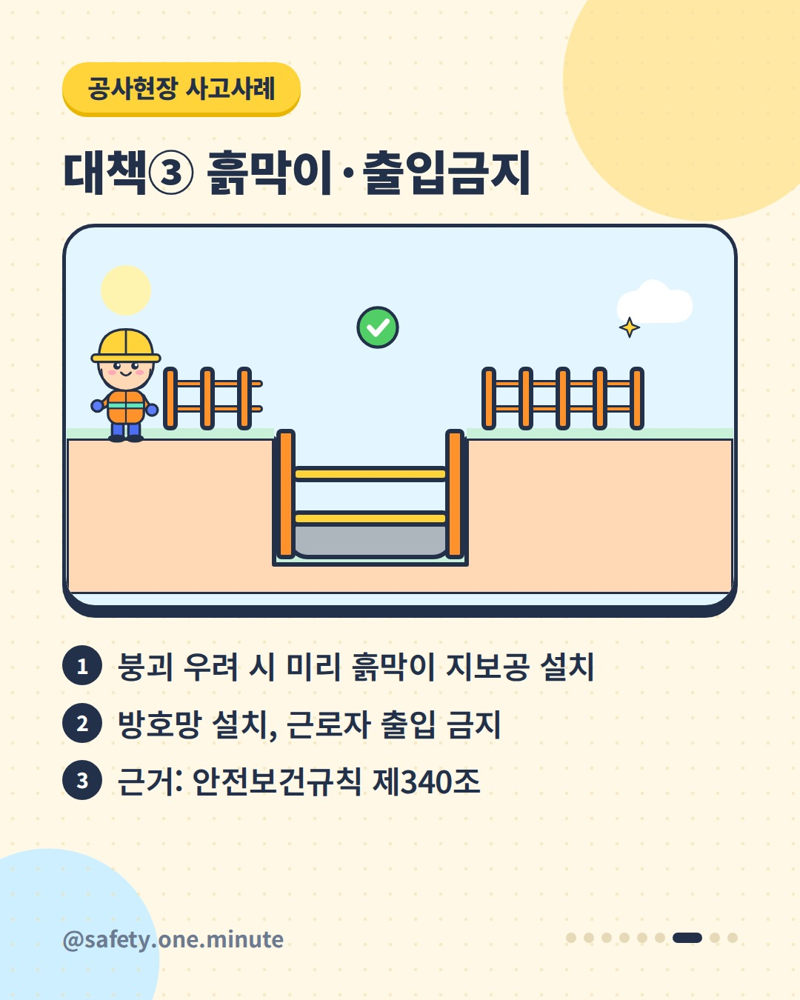
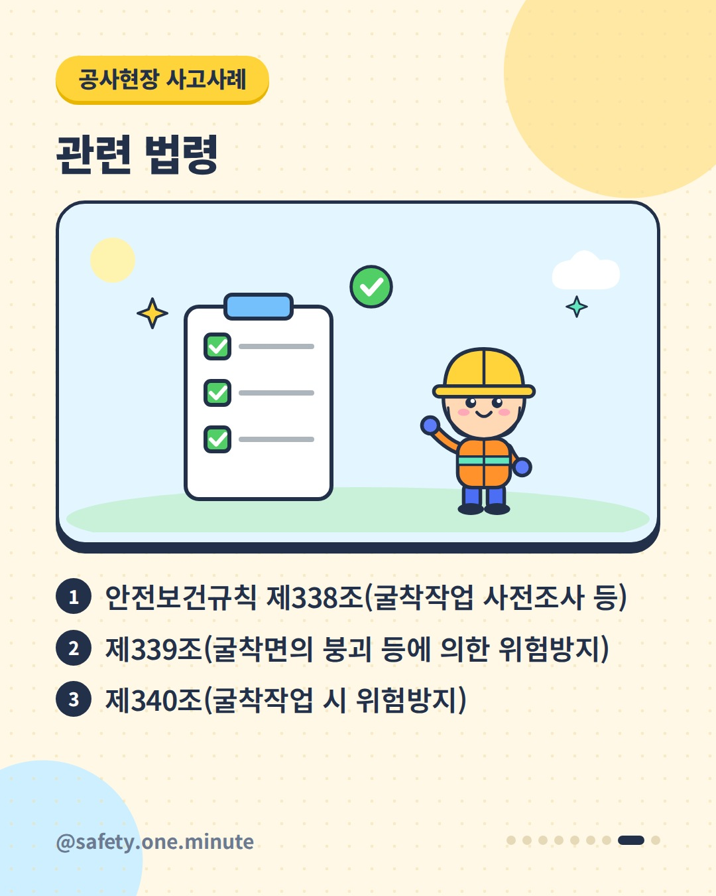
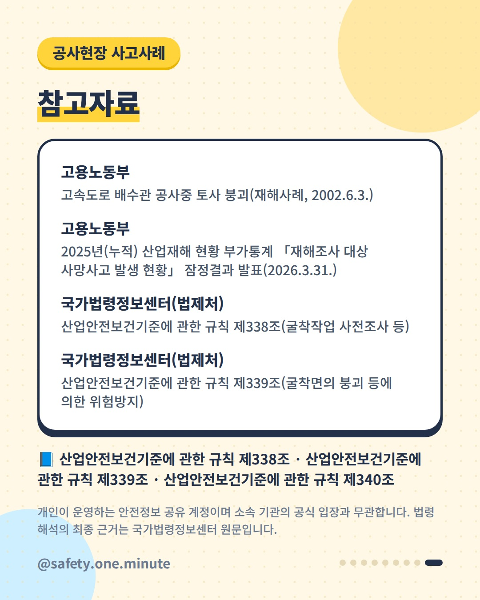

터파기 중 무너진 흙 — 9장 (4:5)








캡션
땅을 판 그 자리, 벽이 무너질 수 있습니다. 고용노동부가 공개한 재해사례입니다(2002년). 고속도로 공사 현장에서 협력업체 근로자 3명이 높이 3m, 폭 1.8m, 길이 7m로 터파기를 한 뒤 배수용 흄관을 놓던 중 토사가 무너졌습니다. 1명이 숨지고 2명은 구조됐습니다. 고용노동부 발표(2026.3.)에 따르면 2025년 재해조사 대상 사고사망자는 605명(잠정)이었고, 무너짐은 전년보다 늘어난 유형이었습니다. 현행 산업안전보건기준에 관한 규칙은 굴착작업에 대해 이렇게 정하고 있습니다. ① 굴착 전 주변의 부석·균열, 함수·용수·동결과 그 변화를 점검(제338조) ② 굴착면 기울기를 별표 11 기준에 맞추고(설계도서 기울기 준수나 흙막이 등 조치 시 예외), 비에 대비해 측구 설치·경사면 비닐 덮기(제339조) ③ 붕괴·낙하 우려가 있으면 미리 흙막이 지보공·방호망을 설치하고 근로자 출입 금지(제340조) ※ 사고 당시 법령과 현행 법령은 다를 수 있습니다. 별표 11의 기울기 기준 등 세부 요건은 법령 원문(2025.9.1. 시행본 기준)을 확인하세요. 출처: - 고용노동부 – 고속도로 배수관 공사중 토사 붕괴 재해사례(2002) - 고용노동부 – 2025년 재해조사 대상 사망사고 발생 현황 잠정결과(2026) - 국가법령정보센터(법제처) – 산업안전보건기준에 관한 규칙 제338조~제340조 개인이 운영하는 안전정보 공유 계정이며 소속 기관의 공식 입장과 무관합니다. 법령 해석의 최종 근거는 국가법령정보센터 원문입니다. #토사붕괴 #굴착작업 #터파기 #흙막이 #흙막이지보공 #굴착면기울기 #건설안전 #재해사례 #사고사례 #산업안전 #산업안전보건기준에관한규칙 #안전수칙 #현장안전 #안전보건